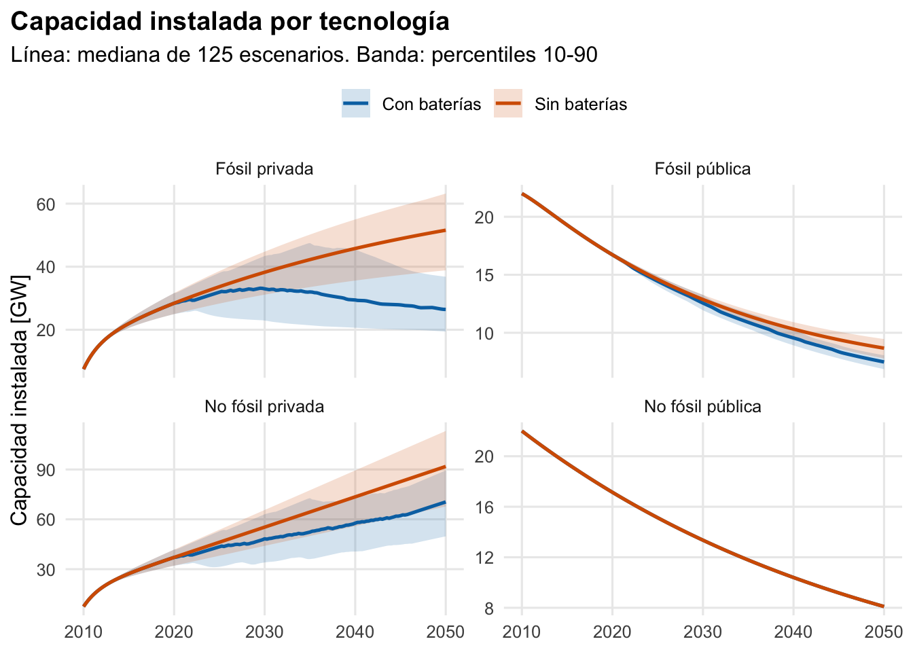
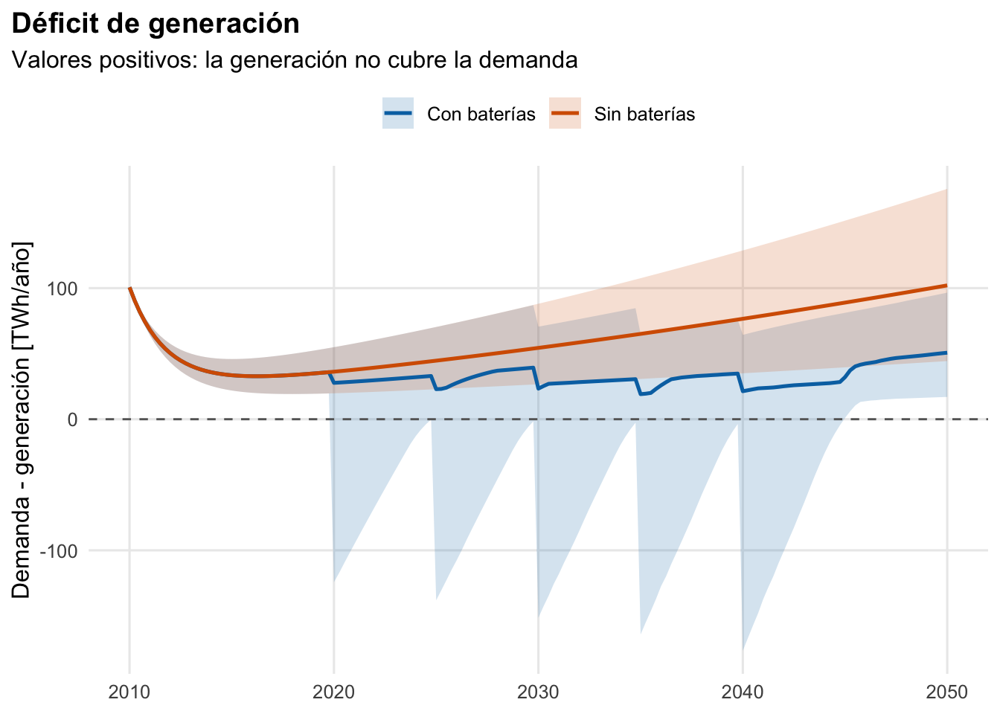
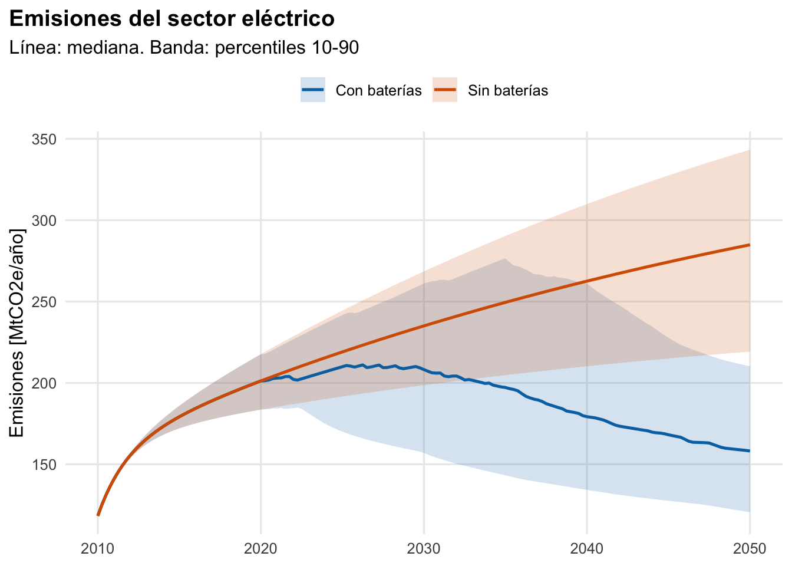
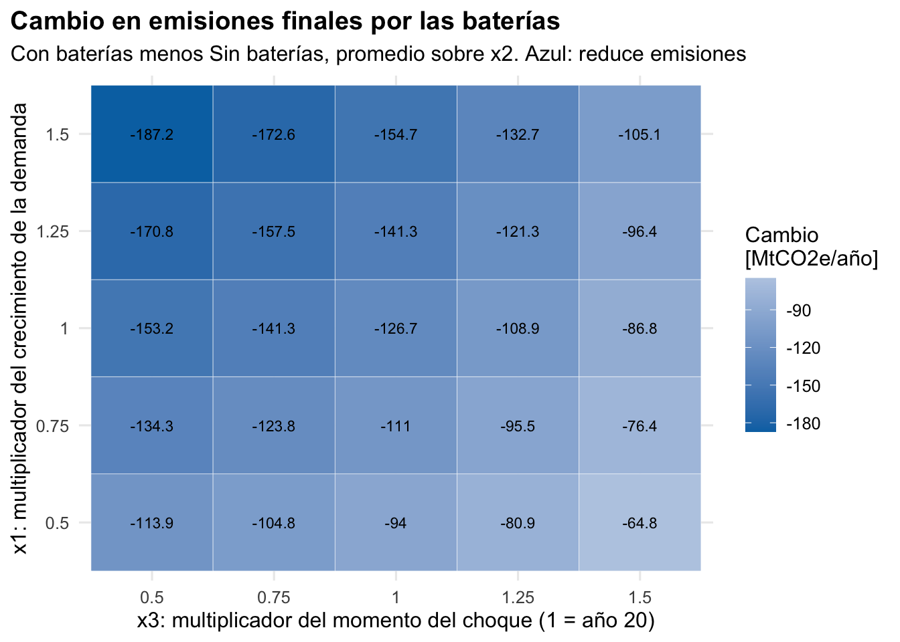
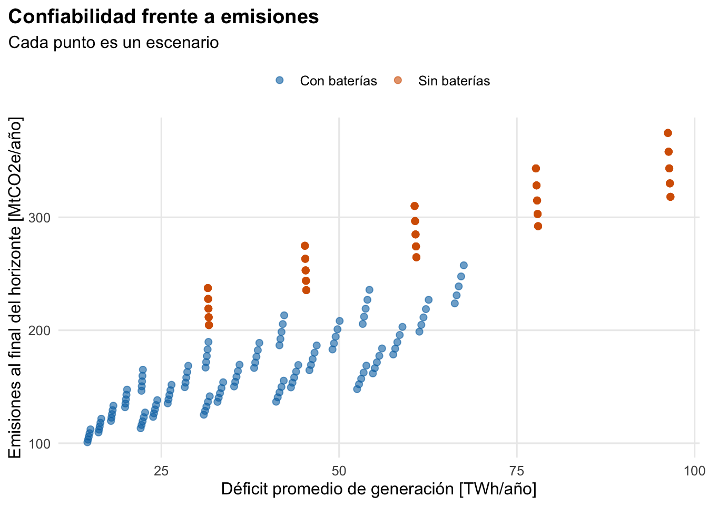

Code
#=========================================================================
# EnerMX: transición del sistema eléctrico bajo incertidumbre
# Modelo de dinámica de sistemas + análisis exploratorio de escenarios
#
# Pregunta: ¿cómo cambian la capacidad instalada, el déficit de generación
# y las emisiones si llegan (o no) las baterías, en 125 futuros posibles
# de demanda, precio de hidrocarburos y momento del choque tecnológico?
#=========================================================================
library(deSolve)
library(dplyr)
library(tidyr)
library(ggplot2)
dir.create("figuras", showWarnings = FALSE)
dir.create("resultados", showWarnings = FALSE)
#-------------------------------------------------------------------------
# 1. SUPUESTOS
#-------------------------------------------------------------------------
anio_base <- 2010 # t = 0 corresponde a este año
horizonte <- 40 # años de simulación
paso <- 0.25 # paso de integración [años]
horas_anio <- 24 * 365
# Una fila por tecnología (el orden es el del vector de estado)
tec <- data.frame(
id = c("No fósil privada", "Fósil privada",
"No fósil pública", "Fósil pública"),
tipo = c("NoFosil", "Fosil", "NoFosil", "Fosil"),
sector = c("privada", "privada", "publica", "publica"),
factor_planta = c(0.33 * 1.10, 0.47 * 1.19, 0.33 * 0.90, 0.47 * 0.90), # [1]
costo_gw = c(1228, 1739, 95000 + 2857, 5822), # [millones MXN / GW]
inversion_base = c(500 * 20, 500 * 20, 100 * 90, 100 * 20), # [millones MXN/año]
vida_util = c(23, 28, 40, 28), # [años]
cap0 = c(15 / 2, 15 / 2, 44 / 2, 44 / 2) # [GW]
)
factor_emision <- 0.001 # [MtCO2e / GWh], ver EIA FAQ 74
# Tablas de efectos (curvas de interpolación). rule = 2 evita NA fuera de rango.
x_tab <- c(0, 0.5, 0.8, 1.0, 1.2, 1.5, 2.0, 100)
curva <- function(y) function(x) approx(x_tab, y, xout = x, rule = 2)$y
efecto_dentro_nofosil <- curva(c(2, 1.5, 1.2, 1, 0.8, 0.5, 0.1, 0.01))
efecto_dentro_fosil <- curva(c(0, 0.5, 0.8, 1, 1.2, 1.5, 2, 2)) # corregido: en el original decía 05.5
efecto_entre_privada <- curva(c(1.5, 1.15, 1.1, 1, 0.8, 0.7, 0.65, 0.6))
efecto_entre_publica <- curva(c(0.65, 0.7, 0.8, 1, 1.1, 1.15, 1.5, 1.5))
# Efecto del precio de hidrocarburos sobre el costo de generación fósil.
# TRUE = combustible más caro encarece la generación fósil (supuesto aquí)
# FALSE = tabla original (a mayor precio, menor costo; parece invertida)
hc_encarece_fosil <- TRUE
efecto_precio_hc <- if (hc_encarece_fosil) {
curva(x_tab)
} else {
curva(c(2, 1.5, 1.2, 1, 0.8, 0.5, 0.1, 0.01))
}
# Retroalimentación de confiabilidad (NO estaba en el modelo original).
# Sin ella la inversión es la misma pase lo que pase, y la generación termina
# varias veces por encima de la demanda. Con ella, la inversión sube cuando
# falta generación y se frena cuando sobra.
# brecha = (demanda - generación) / demanda
# multiplicador de inversión = 0.1 + 2 * brecha, acotado entre 0 y 1
# Pon FALSE para replicar la estructura original.
retroalimentacion_brecha <- TRUE
mult_inversion <- function(brecha) {
if (!retroalimentacion_brecha) return(1)
min(1, max(0, 0.1 + 2 * brecha))
}
#-------------------------------------------------------------------------
# 2. MODELO
#-------------------------------------------------------------------------
modelo <- function(t, state, parms) {
with(parms, {
cap <- pmax(state, 0)
es_nofosil <- tec$tipo == "NoFosil"
# Insumos exógenos
demanda <- demanda_fn(t) # [TWh]
precio_hc <- precio_fn(t) # [índice]
ef_bateria <- ifelse(es_nofosil, bateria_fn(t), 1)
# Generación [GWh] y costo nivelado de generación [millones MXN / GWh]
gen <- cap * tec$factor_planta * horas_anio * ef_bateria
cng <- tec$costo_gw / (tec$factor_planta * horas_anio * ef_bateria) *
ifelse(es_nofosil, 1, efecto_precio_hc(precio_hc))
# Precios relativos (orden: 1 NF priv, 2 F priv, 3 NF pub, 4 F pub)
razon_dentro <- c(cng[1] / cng[2], cng[1] / cng[2], # no fósil / fósil, dentro de cada sector
cng[3] / cng[4], cng[3] / cng[4])
razon_entre <- c(cng[1] / cng[3], cng[2] / cng[4], # privada / pública, dentro de cada tipo
cng[1] / cng[3], cng[2] / cng[4])
ef_dentro <- ifelse(es_nofosil, efecto_dentro_nofosil(razon_dentro),
efecto_dentro_fosil(razon_dentro))
ef_entre <- ifelse(tec$sector == "privada", efecto_entre_privada(razon_entre),
efecto_entre_publica(razon_entre))
# La inversión no fósil pública (nuclear) se concentra en un sexenio
rampa <- c(1, 1, if (t > 0 && t <= 6) 0.4 * t else 0, 1)
gen_total <- sum(gen) / 1000 # [TWh]
brecha <- (demanda - gen_total) / demanda
inversion <- tec$inversion_base * ef_dentro * ef_entre * rampa * mult_inversion(brecha)
incremento <- inversion / tec$costo_gw # [GW/año]
perdida <- cap / tec$vida_util # [GW/año], cada tecnología con su vida útil
emisiones <- sum(gen[!es_nofosil]) * factor_emision # [MtCO2e/año]
list(incremento - perdida,
demanda = demanda,
gen_total = gen_total,
deficit = demanda - gen_total,
emisiones = emisiones,
cng_sistema = mean(cng),
precio_hc = precio_hc,
ef_bateria = bateria_fn(t))
})
}
#-------------------------------------------------------------------------
# 3. UNA SIMULACIÓN (un escenario y una política)
#-------------------------------------------------------------------------
simular <- function(x1, x2, x3, baterias = TRUE) {
parms <- list(
demanda_fn = function(t) 300 + 10 * x1 * t, # x1: ritmo de crecimiento de demanda
precio_fn = function(t) 1 + 0.01 * x2 * t, # x2: ritmo de alza de hidrocarburos
bateria_fn = function(t) if (baterias && t >= 20 * x3) 2 else 1 # x3: cuándo llega el choque
)
y0 <- setNames(tec$cap0, tec$id)
out <- ode(y = y0, times = seq(0, horizonte, paso),
func = modelo, parms = parms, method = "rk4")
as.data.frame(out)
}
#-------------------------------------------------------------------------
# 4. ESCENARIOS: todas las combinaciones de incertidumbres x política
#-------------------------------------------------------------------------
valores <- seq(0.5, 1.5, 0.25)
escenarios <- expand.grid(x1 = valores, x2 = valores, x3 = valores,
politica = c("Sin baterías", "Con baterías"),
stringsAsFactors = FALSE)
escenarios$run_id <- seq_len(nrow(escenarios))
resultados <- lapply(seq_len(nrow(escenarios)), function(i) {
e <- escenarios[i, ]
sim <- simular(e$x1, e$x2, e$x3, baterias = e$politica == "Con baterías")
cbind(sim, run_id = e$run_id)
}) |>
bind_rows() |>
left_join(escenarios, by = "run_id") |>
mutate(anio = anio_base + time)
write.csv(resultados, "resultados/resultados_todas_las_corridas.csv", row.names = FALSE)
#-------------------------------------------------------------------------
# 5. MÉTRICAS POR ESCENARIO (una fila por corrida)
#-------------------------------------------------------------------------
metricas <- resultados |>
group_by(run_id, x1, x2, x3, politica) |>
summarise(
deficit_frac = mean(deficit > 0.1), # fracción del tiempo con déficit > 0.1 TWh
deficit_medio = mean(pmax(deficit, 0)), # déficit promedio [TWh/año]
deficit_final = deficit[which.max(time)], # [TWh]
emisiones_final = emisiones[which.max(time)], # [MtCO2e/año]
dif_cng = cng_sistema[which.max(time)] - cng_sistema[1],
.groups = "drop"
)
write.csv(metricas, "resultados/metricas_por_escenario.csv", row.names = FALSE)
resumen <- metricas |>
group_by(politica) |>
summarise(across(c(deficit_frac, deficit_medio, deficit_final, emisiones_final, dif_cng),
list(mediana = median,
p10 = ~quantile(.x, 0.1),
p90 = ~quantile(.x, 0.9))),
.groups = "drop")
print(resumen)# A tibble: 2 × 16
politica deficit_frac_mediana deficit_frac_p10 deficit_frac_p90
<chr> <dbl> <dbl> <dbl>
1 Con baterías 0.876 0.826 0.904
2 Sin baterías 1 1 1
# ℹ 12 more variables: deficit_medio_mediana <dbl>, deficit_medio_p10 <dbl>,
# deficit_medio_p90 <dbl>, deficit_final_mediana <dbl>,
# deficit_final_p10 <dbl>, deficit_final_p90 <dbl>,
# emisiones_final_mediana <dbl>, emisiones_final_p10 <dbl>,
# emisiones_final_p90 <dbl>, dif_cng_mediana <dbl>, dif_cng_p10 <dbl>,
# dif_cng_p90 <dbl>Code
#-------------------------------------------------------------------------
# 6. GRÁFICAS
#-------------------------------------------------------------------------
colores <- c("Sin baterías" = "#D55E00", "Con baterías" = "#0072B2")
tema <- theme_minimal(base_size = 12) +
theme(plot.title = element_text(face = "bold"),
plot.title.position = "plot",
legend.position = "top",
panel.grid.minor = element_blank())
# Mediana y banda 10-90% entre escenarios
banda <- function(df, var, ...) {
df |>
group_by(politica, anio, ...) |>
summarise(med = median({{ var }}),
p10 = quantile({{ var }}, 0.1),
p90 = quantile({{ var }}, 0.9),
.groups = "drop")
}
graf_banda <- function(df, ylab, titulo, subtitulo = NULL) {
ggplot(df, aes(anio, med, colour = politica, fill = politica)) +
geom_ribbon(aes(ymin = p10, ymax = p90), alpha = 0.18, colour = NA) +
geom_line(linewidth = 0.9) +
scale_colour_manual(values = colores, name = NULL) +
scale_fill_manual(values = colores, name = NULL) +
labs(x = NULL, y = ylab, title = titulo, subtitle = subtitulo) +
tema
}
# 6.1 Capacidad instalada por tecnología
cap_larga <- resultados |>
pivot_longer(all_of(tec$id), names_to = "tecnologia", values_to = "capacidad")
p1 <- cap_larga |>
banda(capacidad, tecnologia) |>
graf_banda("Capacidad instalada [GW]",
"Capacidad instalada por tecnología",
"Línea: mediana de 125 escenarios. Banda: percentiles 10-90") +
facet_wrap(~tecnologia, scales = "free_y")
# 6.2 Déficit de generación
p2 <- resultados |>
banda(deficit) |>
graf_banda("Demanda - generación [TWh/año]",
"Déficit de generación",
"Valores positivos: la generación no cubre la demanda") +
geom_hline(yintercept = 0, linetype = "dashed", colour = "grey40")
# 6.3 Emisiones
p3 <- resultados |>
banda(emisiones) |>
graf_banda("Emisiones [MtCO2e/año]",
"Emisiones del sector eléctrico",
"Línea: mediana. Banda: percentiles 10-90")
# 6.4 ¿En qué futuros ayudan más las baterías? (cambio en emisiones al final)
dif_bat <- metricas |>
select(x1, x2, x3, politica, emisiones_final) |>
pivot_wider(names_from = politica, values_from = emisiones_final) |>
mutate(cambio = `Con baterías` - `Sin baterías`) |>
group_by(x1, x3) |>
summarise(cambio = mean(cambio), .groups = "drop")
p4 <- ggplot(dif_bat, aes(factor(x3), factor(x1), fill = cambio)) +
geom_tile(colour = "white") +
geom_text(aes(label = round(cambio, 1)), size = 3) +
scale_fill_gradient2(low = "#0072B2", mid = "white", high = "#D55E00",
midpoint = 0, name = "Cambio\n[MtCO2e/año]") +
labs(x = "x3: multiplicador del momento del choque (1 = año 20)",
y = "x1: multiplicador del crecimiento de la demanda",
title = "Cambio en emisiones finales por las baterías",
subtitle = "Con baterías menos Sin baterías, promedio sobre x2. Azul: reduce emisiones") +
tema + theme(legend.position = "right")
# 6.5 Compromiso entre confiabilidad y emisiones
p5 <- ggplot(metricas, aes(deficit_medio, emisiones_final, colour = politica)) +
geom_point(alpha = 0.6, size = 2) +
scale_colour_manual(values = colores, name = NULL) +
labs(x = "Déficit promedio de generación [TWh/año]",
y = "Emisiones al final del horizonte [MtCO2e/año]",
title = "Confiabilidad frente a emisiones",
subtitle = "Cada punto es un escenario") +
tema
graficas <- list(capacidad = p1, deficit = p2, emisiones = p3,
efecto_baterias = p4, compromiso = p5)
anchos <- c(capacidad = 10, deficit = 8, emisiones = 8, efecto_baterias = 8, compromiso = 8)
altos <- c(capacidad = 7, deficit = 5, emisiones = 5, efecto_baterias = 5.5, compromiso = 5.5)
for (nm in names(graficas)) {
ggsave(sprintf("figuras/%s.png", nm), graficas[[nm]],
width = anchos[[nm]], height = altos[[nm]], dpi = 200, bg = "white")
print(graficas[[nm]])
}



